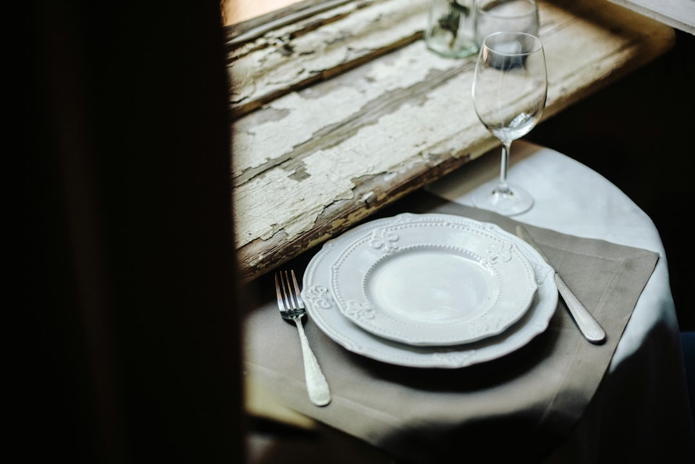

Innovazione nei Menu Digitali: Come Locanda Digitale Rivoluziona la Comunicazione per Ristoratori e Chef

Rivoluzione Digitale per Ristoratori: Come Locanda Digitale Trasforma Menu e Social in Esperienze Coinvolgenti
- I menu cartacei tradizionali faticano a coinvolgere i clienti e valorizzare la qualità dei piatti.
- I costi elevati per la produzione di contenuti video professionali limitano la comunicazione sui social e le strategie di marketing.
- Locanda Digitale offre una suite AI innovativa che digitalizza menu e crea spot 3D a partire da foto reali, con soluzioni a costi accessibili e senza abbonamenti.
Analisi Approfondita della Notizia e delle Implicazioni Operative
Nel settore della ristorazione, la comunicazione visiva sta diventando un asset strategico imprescindibile per attrarre e fidelizzare la clientela. Tuttavia, molte attività, comprese trattorie, pizzerie gourmet e agriturismi, continuano ad affidarsi a menu cartacei di solo testo, spesso poco stimolanti e facilmente ignorati dai clienti. Questa realtà limita fortemente l’efficacia della proposta gastronomica e l’esperienza del cliente al tavolo. Nel contempo, i canali social costituiscono un’opportunità preziosa per valorizzare la qualità e l’originalità dei piatti, ma la produzione di contenuti video professionali – come spot e presentazioni accattivanti – richiede competenze tecniche e risorse economiche elevate.
Questo scenario genera un divario significativo tra la potenzialità comunicativa offerta dalle nuove tecnologie e la capacità operativa dei ristoratori di implementarle efficacemente. La notizia evidenzia chiaramente come i modelli tradizionali di menu e marketing non siano più in grado di rispondere alle aspettative di una clientela sempre più digitale e attenta all’esperienza visiva.
Conseguenze e Costi di Non Agire
Ignorare questa trasformazione operativa comporta rischi importanti in termini di competitività e risultati economici. Innanzitutto, i menu cartacei di solo testo tendono ad essere trascurati dai clienti, specialmente da una fascia più giovane e tecnologica che si aspetta contenuti ricchi, visivi e facilmente consultabili. Questa disconnessione limita la capacità di presentare la qualità e la complessità dei piatti, riducendo l’attrattività e la conversione in ordinazioni.
Parallelamente, senza contenuti video efficaci e coinvolgenti sui social media, i ristoratori perdono l’opportunità di ampliare la propria visibilità, posizionandosi in modo differenziante sul mercato e attirando un bacino più ampio di potenziali clienti. I costi proibitivi legati a professionisti videomaker rendono però difficile per molte strutture adottare queste strategie, aumentandone i gap competitivi.
Questa situazione comporta dunque non solo una perdita di clienti e fatturato, ma anche un notevole spreco di risorse e di potenzialità di comunicazione. Il risultato è un settore che rischia di rimanere indietro rispetto all’evoluzione tecnologica e delle aspettative del mercato.
Come Locanda Digitale Risolve il Problema
In questo contesto, Locanda Digitale si presenta come la soluzione tecnologica ideale per ristoratori, chef e titolari di trattorie, pizzerie gourmet e agriturismi che vogliono modernizzare la propria comunicazione senza investimenti onerosi e senza abbonamenti ricorrenti. La piattaforma offre una suite AI dedicata alla ristorazione capace di trasformare in pochi passaggi le fotografie reali dei piatti in spot video 3D verticali in formato 9:16 a 60 FPS: dinamici, accattivanti e perfetti per i social media moderni.
Parallelamente, Locanda Digitale digitalizza completamente i menu cartacei, arricchendoli con fotografie HD delle portate e integrando QR Code da posizionare direttamente al tavolo. Questo consente una fruizione immediata e coinvolgente da parte dei clienti, che possono esplorare l’offerta culinaria in modo autonomo, stimolante e interattivo. La digitalizzazione aumenta così l’efficacia del menu, valorizzando ogni piatto e facilitando l’ordine consapevole.
L’offerta commerciale è strutturata per essere accessibile e priva di vincoli: Social 3D Starter a €79 una tantum per creare video dinamici per i social e Visual Menu Pro a €149 per la totale digitalizzazione del menu con immagini ad alta definizione e QR Code, senza abbonamenti. Una proposta chiara che permette ai ristoratori di innovare da subito e con investimenti controllati.
| Gestione Tradizionale | Con Locanda Digitale |
|---|---|
| Menu cartaceo solo testo, statico e poco attraente | Menu digitalizzato con fotografie HD e QR Code interattivi al tavolo |
| Costi elevati per videomaker professionisti | Spot video 3D automatici, economici e personalizzati tramite suite AI |
| Comunicazione social limitata e poco coinvolgente | Video social dinamici in vertical 9:16 ideali per Instagram, TikTok e Facebook |
| Difficoltà a trasmettere qualità e unicità del piatto | Valorizzazione visiva immediata e storytelling efficace per ogni portata |
| Aggiornamenti frequenti costosi e complessi | Aggiornamento semplice e veloce con caricamento foto e generazione automatica video |
💡 Ti è stato utile questo approfondimento?
Condividilo con un collega o un amico del settore Ristoratori, Chef, Titolari di Trattorie, Pizzerie Gourmet e Agriturismi a cui potrebbe interessare!
FAQ - Domande Frequenti
1. Locanda Digitale è adatta anche a piccole trattorie o solo a locali gourmet?
La soluzione è progettata per tutte le dimensioni di locali, da piccoli agriturismi a pizzerie gourmet, grazie alla semplicità d’uso e ai costi accessibili.
2. Posso aggiornare frequentemente il mio menu e i video con Locanda Digitale?
Sì, l’interfaccia permette aggiornamenti rapidi caricando nuove foto e generando nuovi video senza costi aggiuntivi o abbonamenti.
3. Che tipo di supporto è previsto per l’adozione della piattaforma?
Locanda Digitale include tutorial dedicati e assistenza online per guidare i ristoratori nell’integrazione tecnologica e massimizzare i risultati.
Inizia Subito
Social 3D Starter a €79 una tantum o Visual Menu Pro a €149. Nessun abbonamento.
Fonti Ufficiali e Risorse Esterne
Scopri l'Intelligenza Artificiale per la tua attività
Ottimizza i processi e aumenta le vendite con le soluzioni B2B di RM Studio.
Scopri Locanda Digitale